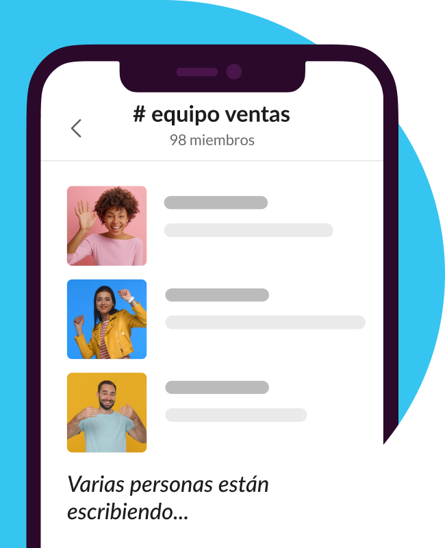

EMPRESAS DE TODO EL MUNDO YA CONFíAN EN SLACK



Los canales son el corazón de Slack. Son espacios organizados para todo el mundo que contienen
todo lo necesario para trabajar. Los canales permiten conectarse entre departamentos, oficinas, zonas horarias
e incluso con otras empresas.
Obtener más información sobre los canales

Slack te otorga la flexibilidad para trabajar cuando, donde y como tú quieras. Puedes chatear, enviar clips de audio y vídeo o unirte a una junta para discutir asuntos en directo.
Obtén más información acerca de la comunicación flexible

Conectar tus otras aplicaciones de trabajo con Slack te permite ahorrar tiempo al no tener que cambiar entre pestañas. Además, con herramientas eficaces como el Creador de flujos de trabajo, puedes automatizar tareas rutinarias.
Más información sobre la plataforma de Slack
Reúne a tu equipo
Selecciona cómo quieres trabajar
Agiliza el trabajo con todas tus herramientas en un mismo lugar
Equipos grandes y pequeños confían en Slack
85%
de usuarios afirma que slack ha mejorado la comunicación* -
86%
creen que su capacidad para trabajar a distancia ha mejorado*
-88%
se sienten más conectados con sus equipos*
* Promedio ponderado. Basado en una encuesta de 2707 respuestas de usuarios semanales de Slack en Estados Unidos, Reino Unido, Australia y Canadá, con un margen de error de ± 2 % al 95 % CI (diciembre de 2021).